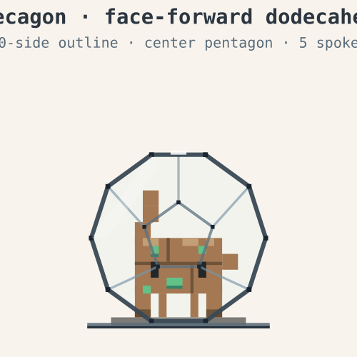
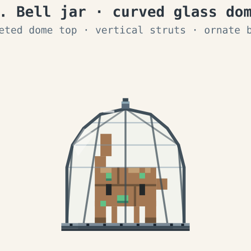
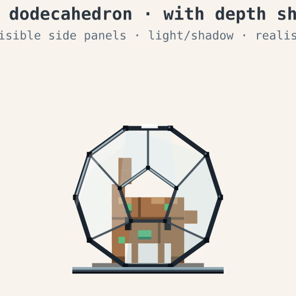
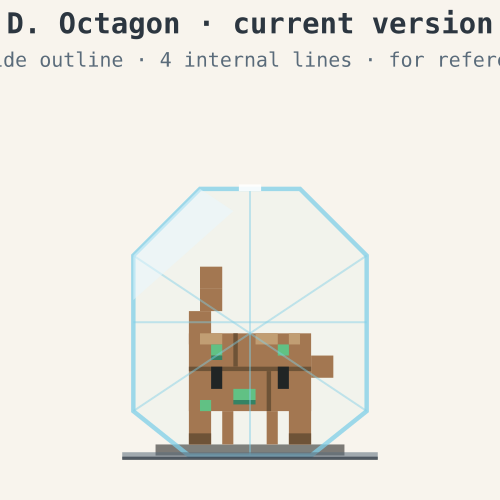

A. 十边形正面投影
正十二面体面对镜头时的几何精确投影：外轮廓为正十边形，正中央显示一块完整的五边形（面对你的那一面），5 条辐条向外连到十边形顶点，自然分割出 5 块梯形侧面板。
优：几何最规整，"教科书式"正十二面体识别度最高。
欠：稍偏理性，少一点重量感。

B. 钟罩 / 实验玻璃罩
弯曲多边形顶 + 5 条立柱 + 顶部金属顶针 + 厚重金属底环+ 8 颗铆钉。整体感觉像维多利亚时代的实验室钟形玻璃罩。
优："装着标本/外星人"的视觉隐喻最强，有手工质感。
欠：偏离原著的"正十二面体"几何描述。

C. 立体阴影正十二面体（推荐）
在 A 的基础上，给 5 块侧面板涂不同明暗（左上最亮、右下最暗），加大铆钉 + 铆钉高光 + 上沿金属反光 + 三层底环。骨架更粗黑、节点更可见。
优：原著几何 + 真实立体感，机械工业质感最足。
欠：骨架可能稍显抢戏，需平衡。

D. 当前八边形版（参考用）
现在仓库里的版本：八边形外轮廓 + 4 条对角辅助线 + 半透青色描边。
优：简洁。
欠：不能立刻让人识别"正十二面体"，几何特征不明显。